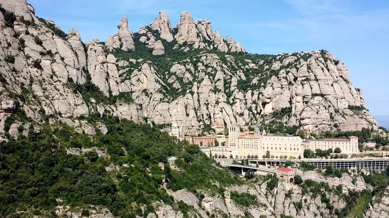

Dificultat: Mitjana
Durada aproximada: 4 hores
Ruta entre formacions rocoses espectaculars, ermites i miradors

Dificultat:Mitjana
Durada aproximada: 5 hores
Itinerari entre llacs, boscos i paisatge d'alta muntanya

Dificultat: Baixa
Durada aproximada: 3 hores
Ruta costanera amb cales, penya-segats i visites al Mediterrani
Comparativa:
| Rutes | Dificultat | Durada aproximada |
|---|---|---|
| Montserrat | Mitjana | 4 hores |
| Parc Nacional d'Aigüestortes | Mitjana | 5 hores |
| Camí de Ronda | Baixa | 3 hores |